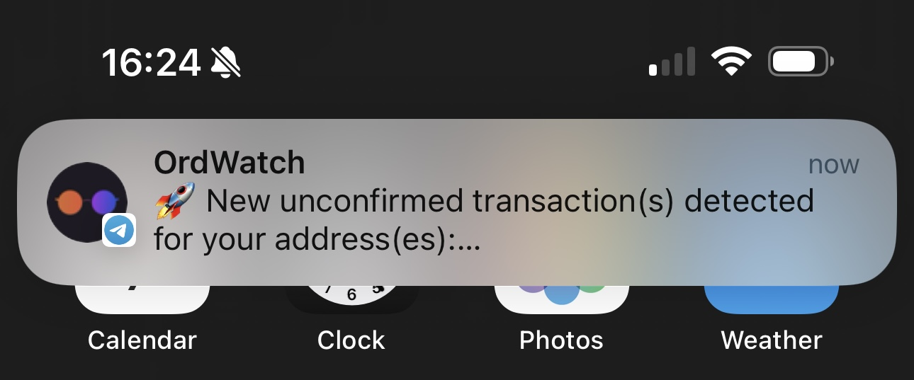

Welcome to OrdWatch
OrdWatch is a simple Telegram notification service that tracks Bitcoin addresses for new transactions in the mempool. It's designed to connect to your own Bitcoin node via your local Mempool API or the public Mempool API to send notifications when new transactions appear or get confirmed.
Features
- Track multiple Bitcoin addresses.
- Get notifications for unconfirmed and confirmed transactions via Telegram.
- Connect to your own Bitcoin node or use the public Mempool API.
- Customizable cron job frequency for transaction checks.
Screenshot Example
Here's how it looks when the Telegram bot notifies you of a new transaction:
Questions and Feedback
If you have any questions or feedback, feel free to contact me on X. You're welcome to DM me for any clarifications or suggestions regarding OrdWatch.